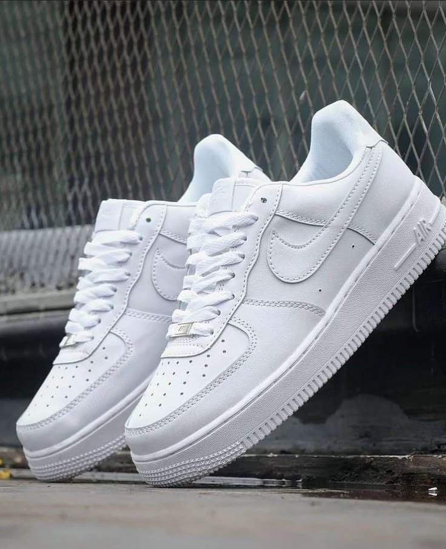
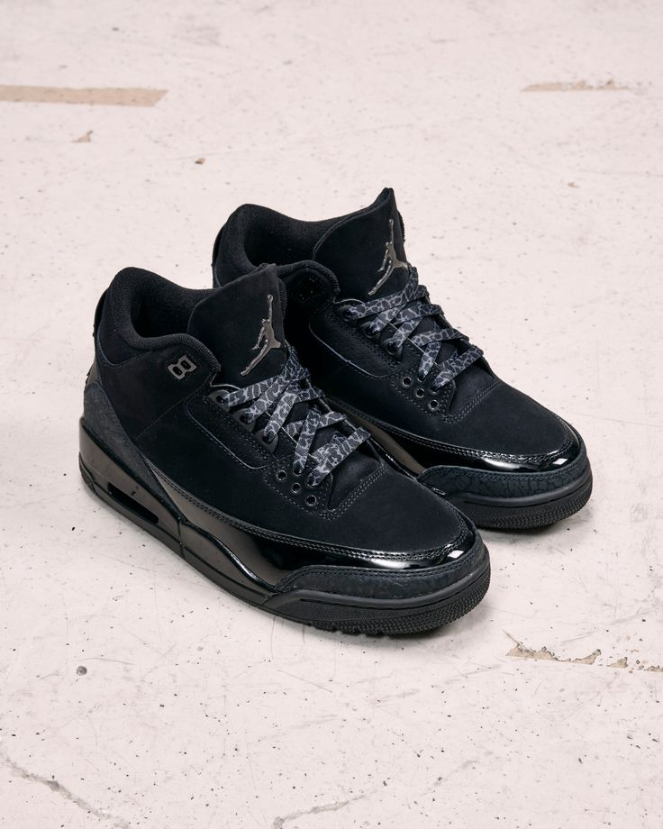
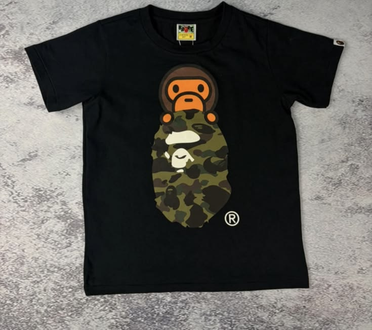
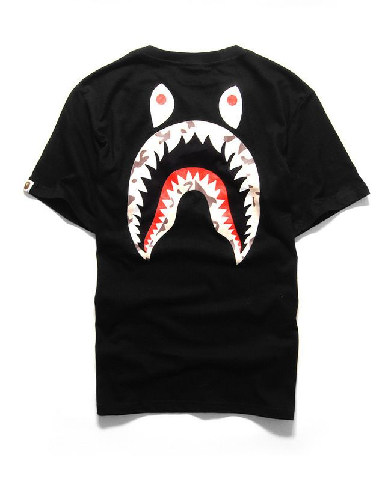

CALZADO
Nike Air Force 1
Clásico urbano de silueta versátil, pensado para combinar con distintos looks.
Gs. 789.000ROPA · CALZADOS · MODA URBANA
Moda urbana para quienes convierten su estilo en una forma de expresión. Ropa y calzados para usar tu actitud a cualquier hora.
Ver catálogo01 · NOSOTROS
Nocturna 24/7 es un emprendimiento dedicado a la venta de ropa y calzados de moda urbana. Nace con la idea de reunir productos modernos, cómodos y con personalidad para jóvenes que buscan diferenciarse.
Un proyecto creado para acercar la moda urbana a quienes buscan un estilo auténtico.
Ofrecer productos modernos y de calidad, con una atención cercana y accesible.
Ser una referencia de moda urbana y construir una comunidad alrededor del estilo.
02 · CATÁLOGO
Productos destacados · precios de referencia

CALZADO
Clásico urbano de silueta versátil, pensado para combinar con distintos looks.
Gs. 789.000
CALZADO
Diseño totalmente negro, inspirado en la estética icónica de la línea Retro 3.
Gs. 1.030.000
ROPA
Remera de inspiración streetwear con el clásico gráfico Ape Head.
Gs. 240.000
ROPA
Opción urbana con diseño Shark, ideal para destacar dentro del estilo streetwear.
Gs. 270.000*Los precios de referencia pueden variar según talle, disponibilidad, proveedor y cotización.
03 · CONTACTO
Consultá disponibilidad, talles o realizá tu pedido directamente con Nocturna 24/7.